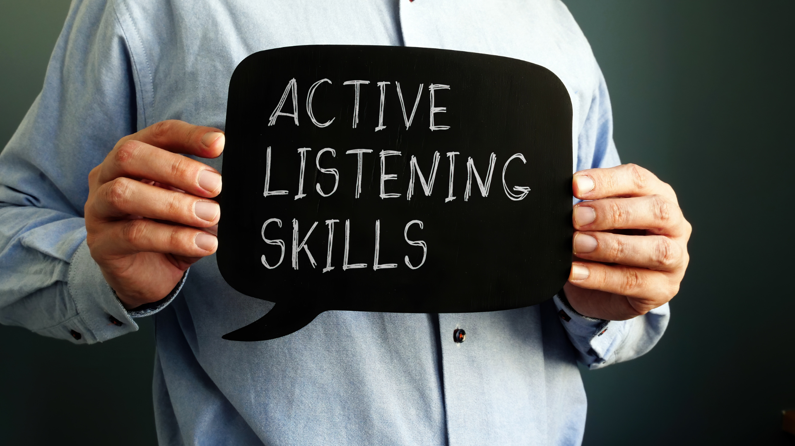
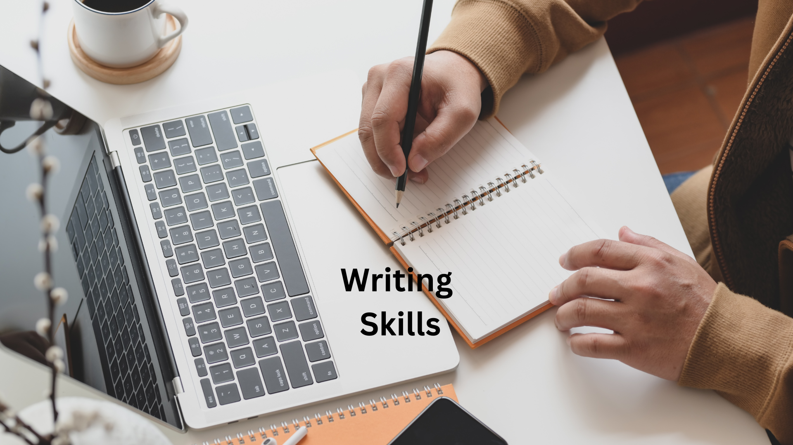

Introduction:
Welcome to "Mastering the Versant Test," an comprehensive online ebook designed to help learners achieve success in the Versant Test, a renowned assessment of English language proficiency. Whether you are preparing for academic admissions, job opportunities, or personal development, this ebook will provide you with valuable insights, practical strategies, and abundant practice materials to enhance your skills and confidently excel in the test.
Ace the versant english test & get your dream job!
Why Versant?
The Versant Test is widely recognized and trusted by academic institutions, organizations, and employers worldwide. It assesses key language skills, including speaking, listening, reading, and writing, providing a comprehensive evaluation of your English proficiency. With its focus on real-world communication, the Versant Test accurately measures your ability to effectively interact in English-language environments.
Significance of the Versant Test:
The Versant Test plays a crucial role in various contexts, serving as a reliable benchmark for assessing language proficiency. Whether you are seeking admission to a university, applying for a job that requires English language skills, or aiming to enhance your overall communication abilities, achieving a strong performance in the Versant Test can open doors to numerous opportunities. Employers often use the test results to make informed decisions about hiring, training, and promotion, while academic institutions utilize them for admissions and placement purposes.
Chapter 1 - Introduction to the Versant Test
1.1: Overview of the Versant Test
In this lesson, you will delve into the details of the Versant Test, understanding its purpose, significance, and how it is administered. Explore the test's history and development, as well as the comprehensive assessment criteria used to evaluate your language proficiency across the four skills: speaking, listening, reading, and writing.
1.2: Format of the Versant Test
Dive into the structure and format of the Versant Test in this lesson. Gain a comprehensive understanding of the test's sections, question types, and time allocation for each skill. Explore the specific tasks and prompts you can expect in the test, and learn valuable strategies to manage your time effectively and maximize your performance.
1.3: Significance of the Versant Test
Discover the significance and impact of the Versant Test in various contexts. Understand why the test is highly regarded by academic institutions, employers, and organizations as a reliable measure of English language proficiency. Explore how the test results are utilized for admissions, job placements, and assessing communication abilities.
1.4: Let's Get Talking - Self Introduction and Conversation Practice Activity
Begin your journey towards mastering the speaking component of the Versant Test. Learn the art of introducing yourself effectively and engaging in meaningful conversations. Practice various conversation scenarios, such as discussing personal experiences, expressing opinions, and engaging in small talk. Enhance your fluency, coherence, and confidence in spoken English.
Chapter 2 - Speaking Skills for the Versant Test
2.1: Understanding Pronunciation and Intonation
Develop a keen understanding of pronunciation and intonation, two critical elements of spoken English. Learn to articulate sounds accurately, understand stress patterns, and use intonation to convey meaning and emphasis. Practice phonetic exercises to improve your pronunciation skills and enhance overall spoken fluency.
2.2: Practice Speaking
Engage in extensive speaking practice activities designed to simulate real-life communication situations. Practice expressing ideas, sharing personal experiences, and participating in discussions. Receive valuable feedback on your fluency, coherence, and language usage, and work towards improving your oral communication skills.
2.3: Strategies for Improving Speaking Skills
Explore effective strategies for enhancing your speaking skills specifically tailored for the Versant Test. Discover techniques for organizing your thoughts, developing coherent responses, and maintaining a clear and concise speaking style. Learn how to effectively use vocabulary, idiomatic expressions, and rhetorical devices to convey your ideas more effectively.
2.4: Common Grammar Mistakes and How to Avoid Them
Identify common grammar mistakes that may impact your spoken English accuracy. Learn strategies to avoid these errors and develop grammatical accuracy. Explore key grammatical concepts, sentence structure, verb tenses, and usage of prepositions. Enhance your language proficiency to ensure a strong performance in the speaking section.
2.5: Practice Speaking Prompts
Engage in extensive practice with a wide range of speaking prompts similar to those encountered in the Versant Test. Practice responding to open-ended questions, providing opinions, and expressing ideas clearly and concisely. Hone your ability to think quickly, organize your thoughts, and deliver coherent and relevant responses.
2.6: Worksheets to Practice
Reinforce your speaking skills through a variety of interactive worksheets and exercises. These targeted practice materials focus on specific aspects of the Versant Test, such as pronunciation, vocabulary usage, grammar, and fluency. Work through these exercises to consolidate your speaking skills and build confidence for the test.
Chapter 3 - Listening Skills for the Versant Test

3.1: Understanding Accents and Speech
Develop your ability to understand different accents and speech patterns commonly encountered in the Versant Test. Learn techniques to decipher unfamiliar accents, identify key information, and comprehend spoken messages accurately. Practice listening to various accents through audio materials specifically curated to enhance your listening skills.
3.2: What Are Accents?
Explore the concept of accents and their role in communication. Understand how accents are formed, influenced by geography, culture, and linguistic factors. Learn to distinguish between regional accents, international accents, and variations in pronunciation. Develop your ear for accents and improve your comprehension of different speech patterns.
3.3: Strategies for Improving Listening Skills
Discover effective strategies and techniques to enhance your listening skills for the Versant Test. Learn active listening techniques, such as predicting, summarizing, and note-taking, to improve your comprehension and retention of information. Develop your ability to identify key details, main ideas, and implied meanings in spoken passages.
3.4: Strategies for Note-taking and Comprehension
Master the art of note-taking during listening activities. Learn efficient note-taking methods, such as abbreviations, symbols, and mapping techniques, to capture essential information accurately. Practice applying these strategies while listening to audio passages and lectures to improve your comprehension and recall.
3.5: Practice Listening
Engage in extensive listening practice exercises designed to simulate the listening component of the Versant Test. Practice listening to various genres, such as interviews, lectures, conversations, and news reports. Develop your ability to comprehend spoken English in different contexts, extract relevant information, and answer comprehension questions accurately.
3.6: Worksheets to Practice
Reinforce your listening skills through interactive worksheets and exercises. These targeted practice materials focus on improving your ability to understand accents, identify main ideas, and extract specific details. Work through these exercises to sharpen your listening skills and boost your confidence for the Versant Test.
Chapter 4 - Reading Skills for the Versant Test

4.1: Strategies for Scanning and Skimming
Develop effective scanning and skimming techniques to quickly locate specific information in written passages. Learn how to skim through texts to get a general understanding and identify main ideas, and how to scan for specific details and keywords. Practice using these strategies with various reading materials to improve your reading speed and accuracy.
4.2: Identifying Main Ideas, Tone, and Purpose
Enhance your ability to identify main ideas, tone, and purpose in written passages. Learn strategies to identify the central theme, distinguish supporting details, and recognize the writer's tone and intended message. Practice analyzing and interpreting passages from different genres to strengthen your comprehension skills.
4.3: Strategies for Improving Reading Skills
Discover strategies to improve your overall reading skills for the Versant Test. Learn techniques to enhance your vocabulary, improve reading fluency, and develop better reading comprehension. Practice reading different types of texts, such as articles, essays, and reports, to broaden your reading proficiency.
4.4: Practice Reading
Engage in extensive reading practice exercises designed to simulate the reading component of the Versant Test. Read passages on various topics and genres, and answer comprehension questions to test your understanding of the material. Practice extracting relevant information, making inferences, and drawing conclusions from the given text.
4.5: Practice Reading Comprehension Exercises and Summarizing Passages
Further refine your reading skills through targeted comprehension exercises and summarization tasks. Practice answering comprehension questions based on provided passages, and learn how to effectively summarize the main ideas and key details. Develop your ability to extract essential information and express it concisely.
4.6: Worksheets to Practice
Reinforce your reading skills with interactive worksheets and exercises. These worksheets cover a range of reading tasks, including identifying main ideas, understanding supporting details, and making inferences. Work through these exercises to strengthen your reading abilities and improve your performance in the Versant Test.
Chapter 5 - Writing Skills for the Versant Test

5.1: Understanding the Writing Prompt and Expectations
Learn how to analyze and interpret writing prompts effectively to understand the requirements and expectations of the Versant Test. Develop strategies to identify the main topic, determine the purpose of the writing task, and plan your response accordingly. Practice analyzing different writing prompts to enhance your comprehension and response planning skills.
5.2: Organizing and Structuring the Writing
Master the art of organizing and structuring your written responses for the Versant Test. Learn how to create a clear and coherent introduction, body paragraphs, and conclusion. Understand the importance of using appropriate transition words and maintaining logical flow in your writing. Practice structuring and organizing your written responses to effectively convey your ideas.
5.3: Strategies for Improving Writing Skills
Enhance your overall writing skills through various strategies and techniques. Learn how to improve sentence structure, use accurate grammar, and enhance vocabulary usage. Explore methods to express ideas more precisely and concisely. Practice writing exercises that target specific areas of improvement to sharpen your writing abilities.
5.4: Practice Writing
Engage in writing practice exercises designed to simulate the writing component of the Versant Test. Respond to different writing prompts, such as opinion essays, argumentative essays, or descriptive passages, and practice articulating your thoughts clearly and coherently. Receive feedback on your writing to identify areas for improvement and refine your writing style.
5.5: Practice Writing Exercises to Improve Clarity
Focus on improving the clarity and effectiveness of your writing through targeted exercises. Practice sentence structure, word choice, and sentence coherence to enhance the overall readability and impact of your written responses. Work on eliminating common writing errors and enhancing the clarity of your ideas.
5.6: Worksheets to Practice
Reinforce your writing skills with interactive worksheets and exercises. These worksheets cover a range of writing tasks, including essay writing, paragraph development, and sentence structure. Work through these exercises to strengthen your writing proficiency and ensure readiness for the writing component of the Versant Test.
Chapter 6 - Vocabulary Building and Grammar Refresher
6.1: Vocabulary Building Techniques and Strategies
Explore effective techniques and strategies to enhance your vocabulary for the Versant Test. Learn how to expand your word bank through reading, context clues, word families, and word association. Discover methods to improve your word retention and usage in different contexts. Practice vocabulary-building exercises to strengthen your command of words.
6.2: Grammar Refresher Exercises
Refresh your understanding of essential grammar rules and concepts for the Versant Test. Review topics such as verb tenses, subject-verb agreement, articles, pronouns, prepositions, and sentence structure. Engage in grammar exercises that target common grammatical challenges and reinforce your grasp of correct grammar usage.
6.3: Practice Vocabulary and Grammar in Context
Apply your vocabulary and grammar knowledge in context-specific exercises. Practice using vocabulary words and grammar rules in meaningful sentences and paragraphs. Enhance your ability to use appropriate vocabulary and apply accurate grammar while communicating your ideas effectively. Receive feedback to refine your language skills.
6.4: Vocabulary and Grammar Drills
Engage in focused vocabulary and grammar drills to strengthen your proficiency. Practice exercises that emphasize specific vocabulary themes, idiomatic expressions, and grammar rules. Enhance your speed and accuracy in using vocabulary and grammar in various contexts. Identify areas for improvement and work on refining your language skills.
6.5: Vocabulary and Grammar in Listening and Reading
Develop your ability to comprehend and interpret vocabulary and grammar in listening and reading passages. Practice identifying key vocabulary words, understanding their meanings, and recognizing their usage in context. Analyze sentence structures and grammatical patterns to enhance your comprehension skills. Apply your vocabulary and grammar knowledge to answer questions accurately.
6.6: Vocabulary and Grammar Review
Conclude the chapter with a comprehensive review of vocabulary and grammar concepts covered in previous lessons. Recap key vocabulary-building techniques and essential grammar rules. Engage in review exercises and quizzes to assess your progress and reinforce your vocabulary and grammar knowledge.